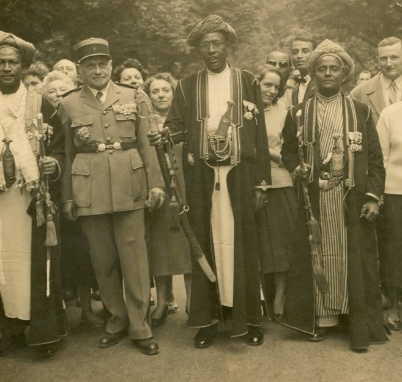
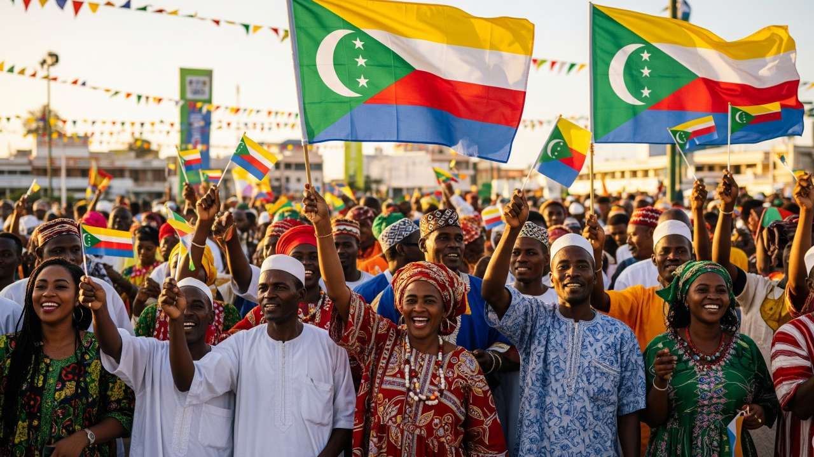

Origines et influences
Situées entre Madagascar et la côte africaine, les Comores ont longtemps été un carrefour de civilisations. Les peuples arabes, perses, malgaches, indonésiens et bantous ont contribué à façonner la diversité culturelle de l’archipel.

Colonisation française
Au XIXe siècle, les Comores passent progressivement sous contrôle français. Les sultans locaux ont joué un rôle dans cette transition, aux côtés des généraux français.
Vers l’indépendance
Le 6 juillet 1975, les Comores proclament leur souveraineté, à l’exception de Mayotte restée française. Cet événement marque une étape majeure dans l’histoire du pays.
Frise chronologique
XVIIe siècle
Arrivée des commerçants arabes, perses, malgaches, indonésiens et bantous.

1841
Début de la colonisation française, avec l’influence des sultans locaux.
1975
Indépendance proclamée, les citoyens célèbrent avec fierté.